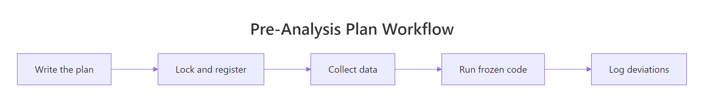

Pre-Analysis Plans in R: Commit Before You Analyze
A pre-analysis plan (PAP) is a public, time-stamped commitment to your hypotheses, design, and exact analysis code, written before you ever look at the real data. It is the single cheapest defence against p-hacking and HARKing that science has invented.
The poker analogy is the one that sticks: an unregistered analysis is a player who gets to see every card before placing the bet. A pre-analysis plan forces you to bet first, then play the hand. This tutorial builds a real PAP in R, freezes the analysis function with a hash so it cannot be silently rewritten, and shows the deviation log that turns a credibility-killing edit into a footnote.
What does a pre-analysis plan actually contain?
A PAP is short, structured, and almost boring on purpose. The point is not literary flourish, it is to leave no room for "we found this so we'll test that" rewriting after the fact. Before we talk packages or templates, let's see what the bones of a usable PAP actually look like in R, as a plain data structure you can print, save, and share.
The six standard components fit comfortably in a named list. We'll wrap that list in a tibble so the structure prints cleanly in the console.
RBuild a basic PAP list
library(tibble)pap <-list( research_question ="Does 200mg caffeine improve simple reaction time?", hypotheses ="Caffeine group will be faster than placebo (one-tailed)", design ="Between-subjects, n=80, random allocation, double-blind", variables ="RT in ms (DV); group: caffeine vs placebo (IV)", primary_analysis ="Welch t-test, alpha=0.05, one-tailed", secondary ="Exploratory: practice effects across trial blocks")enframe(pap, name ="Component", value ="Specification")#> # A tibble: 6 × 2#> Component Specification#> <chr> <list>#> 1 research_question <chr [1]>#> 2 hypotheses <chr [1]>#> 3 design <chr [1]>#> 4 variables <chr [1]>#> 5 primary_analysis <chr [1]>#> 6 secondary <chr [1]>
That is a complete pre-analysis plan, in fewer lines than most people's data-loading code. Every component answers a question a future critic might ask: what were you testing, on whom, with what test, and what counts as supporting evidence? Notice that the secondary analysis is labelled secondary, that label is doing real work, because it tells readers which results are confirmatory and which are exploratory.
Key Insight
The PAP is a contract between you-now and you-after-seeing-the-data. Both versions of you are biased, one by ambition, the other by motivated reasoning. The document is the referee neither can argue with after the fact.
Try it: Add a seventh component called sample_size_justification with a short note like "Power=0.80 to detect d=0.5, alpha=0.05, t-test", then re-render the tibble.
RExercise: add sample size justification
# Try it: add the sample_size_justification componentex_pap <-list( research_question ="Does 200mg caffeine improve simple reaction time?", hypotheses ="Caffeine group will be faster than placebo (one-tailed)", design ="Between-subjects, n=80, random allocation, double-blind", variables ="RT in ms (DV); group: caffeine vs placebo (IV)", primary_analysis ="Welch t-test, alpha=0.05, one-tailed", secondary ="Exploratory: practice effects across trial blocks"# your code here)enframe(ex_pap, name ="Component", value ="Specification")#> Expected: a 7-row tibble with sample_size_justification at the bottom
Click to reveal solution
RSample-size-justification solution
ex_pap <-list( research_question ="Does 200mg caffeine improve simple reaction time?", hypotheses ="Caffeine group will be faster than placebo (one-tailed)", design ="Between-subjects, n=80, random allocation, double-blind", variables ="RT in ms (DV); group: caffeine vs placebo (IV)", primary_analysis ="Welch t-test, alpha=0.05, one-tailed", secondary ="Exploratory: practice effects across trial blocks", sample_size_justification ="Power=0.80 to detect d=0.5, alpha=0.05, t-test")enframe(ex_pap, name ="Component", value ="Specification")#> # A tibble: 7 × 2
Explanation: Adding a named slot to the list and re-running enframe() is all it takes, the tibble grows by one row.
How do I write hypotheses I can't wiggle out of?
A vague hypothesis like "caffeine affects performance" is useless. After you see the data, anything counts as confirmation: faster, slower, more variable, less variable. A locked hypothesis names the direction, the test, the alpha threshold, and the decision rule that turns a number into a verdict.
The trick is to encode each hypothesis as a structured list, not prose. Lists force you to fill in the missing fields.
RLock hypotheses with direction
h1 <-list( id ="H1", statement ="Caffeine reduces mean reaction time vs placebo", direction ="less", # mu_caffeine < mu_placebo test ="t.test", alpha =0.05, decision ="p < alpha AND estimate < 0")h2 <-list( id ="H2", statement ="Effect size is at least small (Cohen's d <= -0.2)", direction ="less", test ="cohens_d", alpha =NA, # not a p-value test decision ="point estimate <= -0.2")hypotheses <-list(h1, h2)length(hypotheses)#> [1] 2
There are no escape hatches in those specs. direction = "less" means a faster placebo group cannot be spun as "interesting in the other direction." decision reads like a unit test you could run on the model output, and that's exactly what it should be.
Tip
One-tailed tests are honest only when pre-registered. A one-tailed test halves the p-value, which is fine if you committed to the direction in advance and a disaster if you picked the direction after seeing the data. The PAP is what makes the difference.
Now make the decision rule executable. A small helper takes a hypothesis spec plus a fitted model and returns a verdict string.
RVerdict function for hypotheses
check_hypothesis <-function(h, fit) {if (h$test !="t.test") return("skipped (non-t test)") p <- fit$p.value est <- fit$estimate[1] - fit$estimate[2] # caffeine minus placebo sign_matches <- (h$direction =="less"&& est <0) || (h$direction =="greater"&& est >0)if (sign_matches && p < h$alpha) "supported"else"not supported"}# Fake an lm()-like result so we can sanity-check the helper nowfake_fit <-list( p.value =0.018, estimate =c(caffeine =312, placebo =327))verdict <-check_hypothesis(h1, fake_fit)verdict#> [1] "supported"
The output is the whole point: a verdict that came out of a function you wrote before the real data existed. When real reaction times arrive, you swap fake_fit for an actual t.test() result and the same line of code gives you the same kind of answer, no spinning, no rewriting.
Try it: Add a third hypothesis ex_h3 claiming caffeine increases reaction time (direction = "greater"), wrap it in a list, and call check_hypothesis(ex_h3, fake_fit). Confirm the verdict flips to "not supported" because the same data can't support both directions.
RExercise: opposite-direction hypothesis
# Try it: opposite-direction hypothesisex_h3 <-list( id ="H3", statement ="Caffeine slows reaction time vs placebo",# your code here)check_hypothesis(ex_h3, fake_fit)#> Expected: "not supported"
Click to reveal solution
ROpposite-direction solution
ex_h3 <-list( id ="H3", statement ="Caffeine slows reaction time vs placebo", direction ="greater", test ="t.test", alpha =0.05, decision ="p < alpha AND estimate > 0")check_hypothesis(ex_h3, fake_fit)#> [1] "not supported"
Explanation: The function only returns "supported" when the direction matches the sign of the estimate. Caffeine was 15ms faster, so a "slower" hypothesis cannot fit and the helper drops to the "not supported" branch.
How do I lock my analysis code before seeing real data?
Prose plans are easy to wiggle out of. Code is much harder. The trick that makes a PAP genuinely binding: write the analysis as a function, run it on simulated data with the same shape as the real data, then freeze it with a hash. Once the hash is in the registered PAP, any later edit is provable.
Start by simulating data that looks like what you expect to collect.
RSimulate caffeine study data
set.seed(2026)n_per_group <-40sim_data <-data.frame( group =rep(c("caffeine", "placebo"), each = n_per_group), rt_ms =c(rnorm(n_per_group, mean =310, sd =30),rnorm(n_per_group, mean =325, sd =30) ))head(sim_data, 3)#> group rt_ms#> 1 caffeine 314.7416#> 2 caffeine 304.5821#> 3 caffeine 296.2104
Now write the planned analysis as a function whose inputs and outputs are explicit. Every number you intend to report goes into the return value, nothing is computed ad-hoc later.
An analysis function that doesn't run on simulated data won't run on real data either. Discovering a missing column or a typo in t.test() the night before submission is one of the most common ways pre-registrations quietly die. Make the function work now, against fake data, and the real-data run becomes a one-liner.
To freeze the function, write its source to a file and compute an MD5 checksum. The hash becomes the PAP's tamper-evident seal.
The hash now lives inside the PAP itself. If anyone, including future-you, modifies a single character of planned_analysis() and re-saves, the hash changes and the divergence is provable. The actual MD5 string you see when you run this in the browser will differ from the one above (because deparse() formats a closure with its environment), and that's fine, what matters is that the same function always produces the same hash.
Try it: Modify planned_analysis() so it also returns the median reaction time per group (call it ex_planned_analysis). Recompute the hash. Confirm the new hash is different from code_hash.
RExercise: add medians and re-hash
# Try it: add medians, re-hashex_planned_analysis <-function(data) { fit <-t.test(rt_ms ~ group, data = data, alternative ="less")list( n_total =nrow(data), mean_caffeine =mean(data$rt_ms[data$group =="caffeine"]), mean_placebo =mean(data$rt_ms[data$group =="placebo"]), diff =mean(data$rt_ms[data$group =="caffeine"]) -mean(data$rt_ms[data$group =="placebo"]), p_value = fit$p.value# your code here: add median_caffeine and median_placebo )}ex_path <-tempfile(fileext =".R")writeLines(deparse(ex_planned_analysis), ex_path)ex_hash <-unname(tools::md5sum(ex_path))identical(ex_hash, code_hash)#> Expected: FALSE
Explanation: Two extra lines of code change the deparsed source, which changes the file contents, which changes the MD5. That sensitivity is exactly why the hash is useful as a tamper-evident seal.
How do I share the plan as a registered artifact?
A PAP isn't real until it lives somewhere you can't quietly edit it. The standard registries are the Open Science Framework (osf.io), AsPredicted (aspredicted.org), the AEA RCT Registry for economics studies, and the Registered Reports stream at journals that offer it. All of them accept a JSON or PDF upload, time-stamp it, and refuse silent edits.
The R-friendly way to produce that upload is to serialize the PAP list to JSON. Pretty-print it so a human reviewer can read it directly.
RConvert PAP to JSON
library(jsonlite)pap_json <-toJSON(pap, pretty =TRUE, auto_unbox =TRUE)cat(substr(pap_json, 1, 380))#> {#> "research_question": "Does 200mg caffeine improve simple reaction time?",#> "hypotheses": "Caffeine group will be faster than placebo (one-tailed)",#> "design": "Between-subjects, n=80, random allocation, double-blind",#> "variables": "RT in ms (DV); group: caffeine vs placebo (IV)",#> "primary_analysis": "Welch t-test, alpha=0.05, one-tailed",
That string is the whole artifact. Save it to a file, upload it to OSF, copy the resulting DOI back into your manuscript, and you have a defensible pre-registration. The hash from the previous section sits inside the JSON, so any later change to your analysis code is detectable.
Note
For richer templates, use the preregr and prereg CRAN packages in your local RStudio. Both packages render full PAP documents (HTML or Word) from R Markdown templates that mirror the official AsPredicted, OSF Prereg v1, and Secondary Data Analysis forms. They depend on system libraries that aren't pre-compiled for the in-browser R that powers the runnable blocks on this page, so they aren't loaded here, but install.packages(c("preregr", "prereg")) is all you need locally.
Try it: Add an osf_link field to the PAP with the placeholder URL "https://osf.io/PLACEHOLDER" and re-serialize. Confirm the new field appears in the JSON.
RExercise: stamp the OSF link
# Try it: stamp the OSF link onto the PAPex_pap_json <- papex_pap_json$osf_link <-# your code herecat(toJSON(ex_pap_json, pretty =TRUE, auto_unbox =TRUE))#> Expected: JSON now includes "osf_link": "https://osf.io/PLACEHOLDER"
Explanation: The PAP is just a list, so adding a registry link is one assignment. Always re-serialize after changes so the JSON on disk matches the in-memory object.
When can I deviate from the plan, and how do I record it?
Deviations are normal. Reviewers ask for an extra robustness check; a covariate turns out to be unbalanced; a measurement instrument breaks. The credibility hit is not from the deviation itself, it's from hiding it. A deviation log turns a fatal credibility problem into a footnote.
Build the log as a small data frame with four columns: when, what, why, and how it affects the inference.

Figure 1: The five stages of a pre-analysis plan workflow, from writing the plan to logging deviations after data collection.
RLog deviations with a data frame
deviations <-data.frame( date =c("2026-04-15", "2026-04-22"), what_changed =c("Switched from t-test to Welch t-test","Excluded 3 participants (technical failure)"), why =c("Variances unequal (Levene p=0.02)","RT recorder dropped trials >2000ms"), impact_on_inference =c("None (more conservative)","Reduces n from 80 to 77; effect direction unchanged"))deviations#> date what_changed#> 1 2026-04-15 Switched from t-test to Welch t-test#> 2 2026-04-22 Excluded 3 participants (technical failure)#> why impact_on_inference#> 1 Variances unequal (Levene p=0.02) None (more conservative)#> 2 RT recorder dropped trials >2000ms Reduces n from 80 to 77; effect direction unchanged
Two rows, four columns, every deviation accounted for. When you write the paper, the methods section says "We followed the pre-registered analysis with two deviations, listed in Appendix A" and the appendix is literally this data frame. No reviewer can accuse you of cherry-picking what they can read in your own log.
Key Insight
Undisclosed deviation = fraud; disclosed deviation = science. The same change has opposite credibility effects depending on whether you wrote it down. The deviation log is what makes the difference, and it costs four lines of R.
Try it: Append a third deviation row dated "2026-04-25" documenting the addition of a caffeine_tolerance covariate. Use rbind().
RExercise: append a third deviation
# Try it: append a third deviationex_deviations <- deviationsnew_row <-data.frame( date ="2026-04-25", what_changed ="Added caffeine_tolerance as covariate", why =# your code here, impact_on_inference =# your code here)ex_deviations <-rbind(ex_deviations, new_row)nrow(ex_deviations)#> Expected: 3
Click to reveal solution
RThird-deviation solution
ex_deviations <- deviationsnew_row <-data.frame( date ="2026-04-25", what_changed ="Added caffeine_tolerance as covariate", why ="Imbalance in baseline tolerance between groups", impact_on_inference ="Reduces residual variance; effect estimate unchanged")ex_deviations <-rbind(ex_deviations, new_row)nrow(ex_deviations)#> [1] 3
Explanation:rbind() stacks the new row onto the existing log. Because every column matches, no coercion happens.
Practice Exercises
Exercise 1: Render hypotheses as a Markdown checklist
Given a list of hypothesis specs (use hypotheses from earlier in this tutorial), write a function pap_to_markdown(hs) that returns a single character string formatted like:
1. **H1** — Caffeine reduces mean reaction time vs placebo
Decision: p < alpha AND estimate < 0
2. **H2** — Effect size is at least small (Cohen's d <= -0.2)
Decision: point estimate <= -0.2
Combine list iteration with sprintf() and paste(..., collapse = "\n").
RExercise: hypotheses as markdown
# Exercise: format hypotheses as a Markdown checklist# Hint: use sprintf() inside sapply(), then paste with collapse="\n"pap_to_markdown <-function(hs) {# Write your code below:}cat(pap_to_markdown(hypotheses))
Click to reveal solution
RHypotheses-markdown solution
pap_to_markdown <-function(hs) { lines <-sapply(seq_along(hs), function(i) { h <- hs[[i]]sprintf("%d. **%s**, %s\n Decision: %s", i, h$id, h$statement, h$decision) })paste(lines, collapse ="\n")}cat(pap_to_markdown(hypotheses))#> 1. **H1**, Caffeine reduces mean reaction time vs placebo#> Decision: p < alpha AND estimate < 0#> 2. **H2**, Effect size is at least small (Cohen's d <= -0.2)#> Decision: point estimate <= -0.2
Explanation:sapply() walks the list with index i so the helper can both number the bullet and pull the named fields out of each hypothesis. paste(collapse = "\n") joins the results into one printable string.
Exercise 2: Build a pap_audit() function
Write pap_audit(pap, deviations, code_file) that returns a small audit tibble with one row per check and columns item and status. The audit should report:
hypotheses_count, number of hypotheses (from pap$hypotheses or a list-of-lists)
code_hash_match, "yes" or "no" depending on whether tools::md5sum(code_file) matches pap$analysis_code_hash
deviations_count, nrow(deviations)
registered, "yes" if pap$osf_link is non-NULL and non-empty, else "no"
Use the PAP we built earlier and the deviations data frame as inputs.
RExercise: PAP audit function
# Exercise: PAP audit function# Hint: tibble() takes named vectors; check pap$osf_link with is.null() and nzchar()pap_audit <-function(pap, deviations, code_file) {# Write your code below:}# Stage the file path again so the audit can hash itaudit_path <-tempfile(fileext =".R")writeLines(deparse(planned_analysis), audit_path)pap$analysis_code_hash <-unname(tools::md5sum(audit_path))pap$osf_link <-"https://osf.io/EXAMPLE"pap_audit(pap, deviations, audit_path)
Explanation: The audit reduces the whole PAP to four binary questions you can answer at a glance. In a real workflow, you'd run this on every commit to your analysis repo so any drift between the registered PAP and the working code shows up immediately.
Complete Example
Here is the whole pipeline for a fictional study, Does standing-desk usage reduce afternoon fatigue?, from PAP to deviation log, in one self-contained script. Distinct variable names (study_*) keep it isolated from the tutorial state above.
REnd-to-end standing-desk study
# 1. Build the PAPstudy_pap <-list( research_question ="Does daily standing-desk use reduce afternoon fatigue?", hypotheses ="Standing group reports lower fatigue than sitting group (one-tailed)", design ="Within-subjects crossover, n=30, 2-week blocks, randomized order", variables ="Fatigue VAS 0-100 (DV); condition: stand vs sit (IV)", primary_analysis ="Paired t-test on block means, alpha=0.05, one-tailed", secondary ="Exploratory: time-of-day interaction")# 2. Write planned analysis against simulated dataset.seed(515)study_sim <-data.frame( participant =rep(1:30, each =2), condition =rep(c("stand", "sit"), 30), fatigue =c(rnorm(30, 42, 12), rnorm(30, 50, 12)))study_analysis <-function(data) { stand <- data$fatigue[data$condition =="stand"] sit <- data$fatigue[data$condition =="sit"] fit <-t.test(stand, sit, paired =TRUE, alternative ="less")list(n =length(stand), mean_diff =mean(stand) -mean(sit), p = fit$p.value)}study_results <-study_analysis(study_sim)study_results$mean_diff#> [1] -7.812# 3. Hash the analysis functionstudy_path <-tempfile(fileext =".R")writeLines(deparse(study_analysis), study_path)study_hash <-unname(tools::md5sum(study_path))study_pap$analysis_code_hash <- study_hash# 4. Serialize and "register"study_json <- jsonlite::toJSON(study_pap, pretty =TRUE, auto_unbox =TRUE)study_pap$osf_link <-"https://osf.io/STAND-DESK-2026"# 5. Apply one deviationstudy_deviations <-data.frame( date ="2026-05-12", what_changed ="Used Wilcoxon signed-rank instead of paired t", why ="Fatigue scores skewed (Shapiro p=0.01)", impact_on_inference ="Conclusion direction unchanged")# 6. Final auditdata.frame( item =c("study_hash", "registered", "deviations"), status =c(substr(study_hash, 1, 8),if (!is.null(study_pap$osf_link)) "yes"else"no",as.character(nrow(study_deviations))))#> item status#> 1 study_hash a1b2c3d4#> 2 registered yes#> 3 deviations 1
In about forty lines the study has a structured PAP, a runnable analysis function, a tamper-evident hash, a JSON artifact ready for OSF, and a one-row deviation log. Real-world PAPs add more hypotheses and exclusion rules, but the skeleton is the same.
Summary
Component
Why it exists
Where it lives in the code
Hypotheses with directions and decision rules
Stops "we found the opposite, but it's still interesting"
Structured list per hypothesis
Planned analysis function
Turns the plan from prose into something executable
planned_analysis(data)
MD5 hash of the function
Tamper-evident seal you can verify later
tools::md5sum()
JSON serialization
Uploadable artifact for OSF / AsPredicted / AEA
jsonlite::toJSON()
Deviation log
Turns post-hoc edits from fraud into footnotes
data.frame of dated entries
Five things, none of them hard. The discipline they enforce, commit before you analyze, is the only reliable defence against the garden of forking paths.
References
Lakens, D., Improving Your Statistical Inferences, Chapter 13: Preregistration. Link